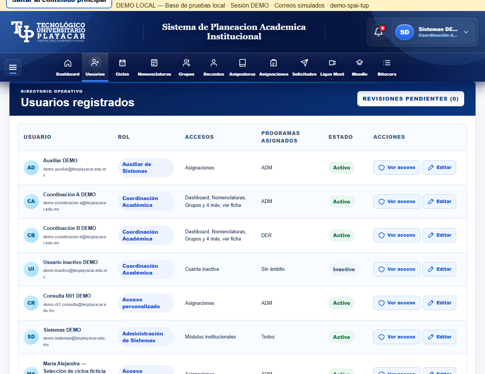
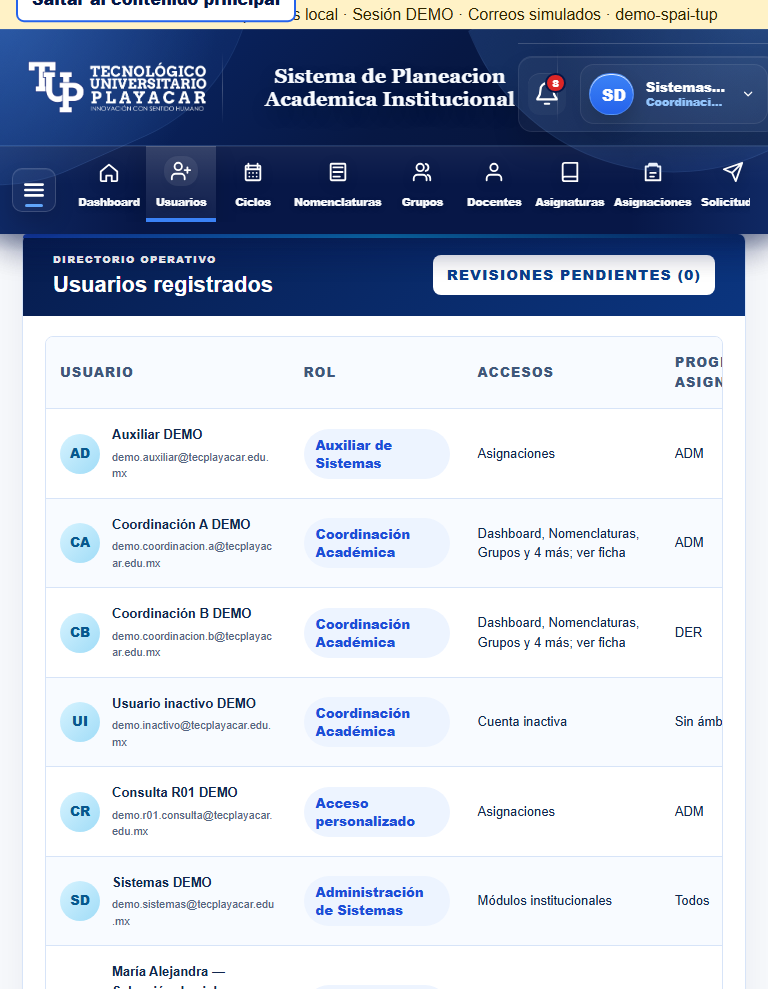
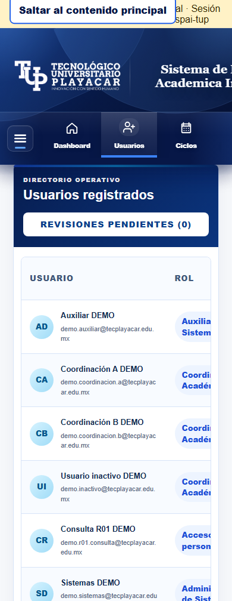
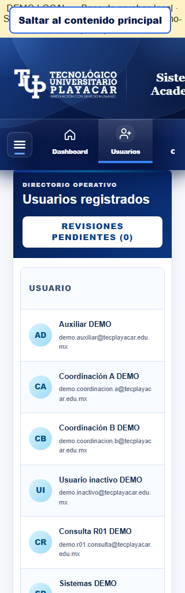

21 de octubre de 2026 · Datos ficticios aislados · Inspección técnica: Codex. Aceptación visual pendiente.
Se retiraron selector, etiqueta, contenedor, estilos y filtro interno. Ambos estados permanecen dentro del directorio autorizado. Margen institucional: 20 px; móvil: 16 px. La tabla conserva desplazamiento horizontal.



